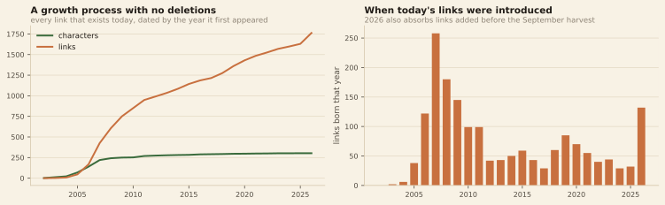
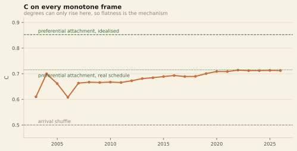
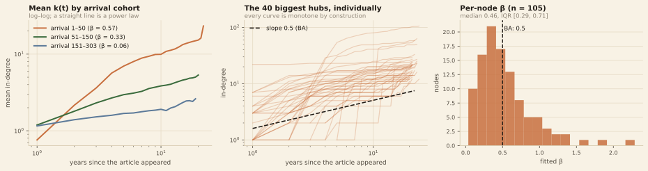
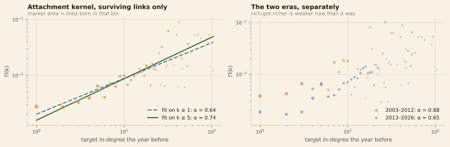
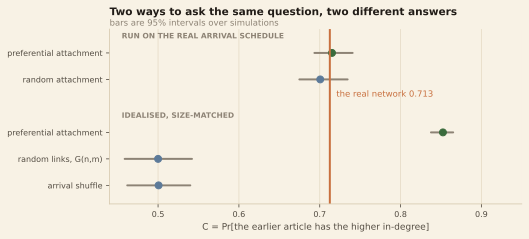

Last week we had one photograph of the Marvel network. This week we went back
through Wikipedia's edit history and got 25 of them, one per
year. A picture becomes a process, and a process is something you can hold a
model up against. So we did — Wikipedia on the left, pure chance in the middle,
rich-get-richer on the right, all three growing from the same starting gun.
Step one
How we got the dataset
Growth models assume a node's degree only ever goes up. Wikipedia does
not work that way — editors prune a "see also" section and a link that existed in
2019 is gone in 2020. So we built a dataset the models can actually describe:
keep only the links that are still there today, date each one by the year
it first appeared, and treat it as permanent from then on. What is left
is strictly additive.
A link's birth year is the year it first appears in the
article's wikitext, but never earlier than the year either endpoint's article
was created:
birth_year = max(first_seen, born[source], born[target]). Some
links were written while the target was still a red link, and without the clamp
a frame would contain a link to a character who is not in it. It moved 50 links.
A link is in frame y if its birth year is y
or earlier, and a character is in it if their article existed by then. Nothing
ever leaves — we assert it frame by frame.
1,762links kept — every link alive today
1,295links dropped: deleted at some point
176removed then restored; we treat them as always present
0links in the final frame missing from last week's snapshot
That last number is the check we care about. The final frame is not
similar to the live network we harvested in week 1 — it is it,
link for link. The build script asserts it and refuses to publish otherwise.
One wrinkle. Each frame samples 1 January, but the live
snapshot was harvested in September 2026. The last frame is
the only one that is not a 1-January state. Treating 2026 as "the network
today" is fine; treating it as one more equal time step is not.

Both counts only ever rise. Most of today's links arrived in the 2006–2010
burst — half were in place by 2011 — which is worth remembering when the growth
curves further down go flat.
All three panels start empty in 2002 and run to 2026 on the same arrival
schedule and the same number of new links each year. Only the choice of
target differs: Wikipedia links where the editors did,
random attachment picks uniformly among characters who exist,
and preferential attachment picks in proportion to links already
held. If arriving early is what makes a hub, the left panel should not look like
the middle one.
The Marvel network, growing
Play it, or drag the year. Each dot is a character, sized by how many links
point at them; faded dots have none yet. Hover anyone to see who they are.
C under each panel is the chance that, picking two characters
at random, the one whose article came first has more links — 0.5 means arrival
order tells you nothing, 1.0 means seniority decides everything.
2002
Oldest article at the centre, newest at the rim — so hubs drifting inward means
early arrival won.
Loading the 25 frames…
Most-linked characters, this year
Top 10 on Wikipedia's panel. The arrow is movement since the frame before.
#
character
links in
page made
Does arrival order decide the hubs?
C recomputed on every frame. The grey band is where a network with no age
effect at all would sit. The dot is now.
WikipediaRandomPreferential
How unequal is it?
Share of characters with at least k links, log–log. A straight
falling line means a heavy tail — a few characters hold most of the links.
WikipediaRandomPreferential
Two caveats. The layout is frozen — computed once and reused
for every frame and every panel, so a character is born where they will end up,
and the positions carry no structure of their own (a spiral ordered by arrival).
All three panels are therefore drawn on identical coordinates and no engine is
flattered. And the cast is a 2026 snapshot: characters whose articles were
deleted never appear, and they skew young and low-degree, so if anything the
age effect here is understated.
What we found
Arrival order predicts the hubs, and always did
On the finished network, C = 0.713: pick two characters at random
and the one whose article came first has more links pointing at it about seven
times in ten. Against 10,000 reshuffles of the arrival order that never happened
by chance (p < 0.0002). Hold on to the number — we take it apart later.

C is 0.66 when the network has 69 characters and 46 links, and 0.71 twenty-one
years and 1,716 links later. The age advantage is there from the first
frames and gains almost nothing from two decades of growth. The dip in
2006 is the year 71 new articles appeared at once, briefly diluting the ordering.
So the advantage does not compound. It is settled early and then
preserved: whatever put the hubs on top had done its work by about 2007.
What we found
How fast does a character grow?
BA's central prediction is not about final degree but about trajectories: a node
joining at time ti should grow as
k(t) ∝ (t − ti)β with β = ½.
Every trajectory here is monotone, so we can fit it.
0.46median β over the 105 characters big enough to fit. BA predicts 0.5
0.57β for the first 50 arrivals
0.33β for arrivals 51–150
0.06β after rank 150 — flat
The first number is a genuine hit for BA. The other three take it away again:
β is a property of the cohort, not of the network. Late arrivals
do not grow slowly, they do not grow. BA predicts one β for every node, and this
network has at least three — so the pooled figure of 0.35 describes none of them.
Growth curves, cohort by cohort
Mean incoming links against age, log–log — a straight line is a power law, and
its slope is β. Turn cohorts on and off, or show every individual character and
hover one to get their name and their own fitted β. The curves are drawn using
only the frames up to 2026, so if you scrub the player above,
these grow with it.
Loading…

The static version. Middle: the 40 biggest hubs against BA's slope-½ reference.
Right: per-character β has median 0.46 with a wide spread — consistent with BA
on average, and with almost nobody in particular.
What we found
Rich-get-richer is fading
You can measure the mechanism directly. For every link born in year y,
take how many links its target already had at the end of y−1, and divide
by how many characters sat at that degree and were available to be picked. That is
Π(k), the chance a character with k links gets the next one. BA assumes
Π(k) ∝ k, exactly linear. We get Π(k) ∝ k0.74 — hubs
still win, but less decisively than BA assumes. Then we split the record in half.
The attachment kernel, over a window you choose
Each dot is a degree: how likely a character with that many links was to receive
the next one. Faint grey dots are the whole record; orange is your window. The
green line is the fitted power law, the dashed line is what perfectly linear
attachment (α = 1, textbook BA) would look like through the same point. Drag the
window and watch α move.
Loading…
—α, the attachment exponent
—years in the window
—links in the fit
0.88α in 2003–2012 — nearly the linear rule BA assumes
0.65α in 2013–2026 — clearly sublinear
The mechanism that built the hub structure is measurably weaker now than
it was. New links in the second decade are spread more evenly over
low-degree targets instead of funnelled to the giants — which lines up with the
growth curves, since the era when late cohorts fail to grow is the era when the
kernel that would lift them is fading.

Left: the kernel over the whole record, fitted from k ≥ 1 and from k ≥ 5 — the
low-degree bins are flat and drag the fit down, which is why the starting point
matters. Right: the same measurement split into two eras.
The part that surprised us
Against the null models — twice, with different answers
C = 0.713 means nothing on its own. The textbook way to give it meaning is to
build reference networks of the same size — 303 characters, 1,762 links:
Size-matched reference
What it assumes
C
95% interval
Arrival shuffle
Real degrees, scrambled arrival order. No age effect by construction.
0.500
0.462 – 0.540
Random links, G(n,m)
Same number of links thrown down at random. No growth, no preference.
0.500
0.459 – 0.542
Wikipedia
The actual network.
0.713
—
Preferential attachment
Textbook BA: every new node arrives with 6 links, aimed by degree.
0.852
0.838 – 0.865
The player disagrees. Scroll back up and read the C under each
panel at 2026. Wikipedia is 0.713 — and random attachment is about
0.70. Not 0.50. The middle panel, which picks its targets by coin flip,
reproduces almost the entire age effect.
The size-matched references throw away the real growth schedule: G(n,m) has no
growth at all, and textbook BA hands every arriving node six links at once. The
player keeps the real arrival order and the real yearly link budget and changes
only the targeting rule. Run that way, 60 times each:
Run on the real schedule
What changes
C
95% interval
Random attachment
Targets picked uniformly among characters who exist yet.
0.701
0.675 – 0.734
Wikipedia
The actual network.
0.713
—
Preferential attachment
Targets picked in proportion to links already held.
0.715
0.693 – 0.741

The same question, asked two ways. Below the gap: idealised networks of the
right size. Above it: the same two rules run on the real arrival schedule,
where all three points sit on top of each other.
Nearly all of the age effect is first-mover advantage and nothing
more. A character whose article appeared in 2005 has been eligible for
links for twenty-one years; one from 2020 has had six. That alone, with targets
chosen by coin flip, gives C ≈ 0.70. Preferential attachment adds 0.014 on top.
Wikipedia lands between the two and sits inside both intervals.
C was the wrong statistic to hang the story on, because it mostly measures who has
had more time. What does separate this network from a coin flip is the
mechanism: the kernel is not flat, hubs really are favoured, and that favouritism
is weaker now than it was in 2008.
The obvious objection
"Old articles are just longer"
Of course they are, and longer articles contain more links. We wrote this control
down before looking, and predicted one half of it would fail.
Effect of arrival order on…
Controlling for
Partial τ
links pointing in
nothing
−0.427
links pointing in
article size
−0.181
links pointing in
article size + pageviews
−0.156
links pointing in
+ the character's comic debut year
−0.139
links pointing out
nothing
−0.344
links pointing out
article size
−0.046
The prediction held. Links pointing out are essentially pure prose
volume — control for article size and the effect collapses to −0.046,
which is what should happen, since an article's outgoing links are just things its
own text mentions. Links pointing in are different: about two thirds of
the raw effect is notability and article size, and the remaining third survives
four controls.
So what
The age effect is real and mostly trivial. C = 0.713, but
random attachment on the same arrival schedule reaches 0.701. Existing for
longer is nearly the whole explanation.
BA's trajectory prediction holds for the founding cohort, and only
for it. Median β of 0.46 against a predicted 0.5 is a hit, but β falls
from 0.57 to 0.33 to 0.06 across cohorts: a fast-growing core wrapped in a
periphery that is standing still.
Preferential attachment is real, sublinear and fading.
Π(k) ∝ k0.74 overall; α ≈ 0.88 in the first decade and ≈ 0.65 in the
second. This is the part a coin flip cannot produce.
A null model has to match the thing it is a null for.
Size-matched references said the age effect was overwhelming; schedule-matched
ones said it was almost entirely a consequence of the schedule. Same data, same
statistic, opposite conclusions.
What we would want next is monthly rather than yearly resolution over 2013–2026,
to see whether the kernel's decline is a real editorial shift or an artefact of
keeping only surviving links — recent links have simply had less time to be
deleted.